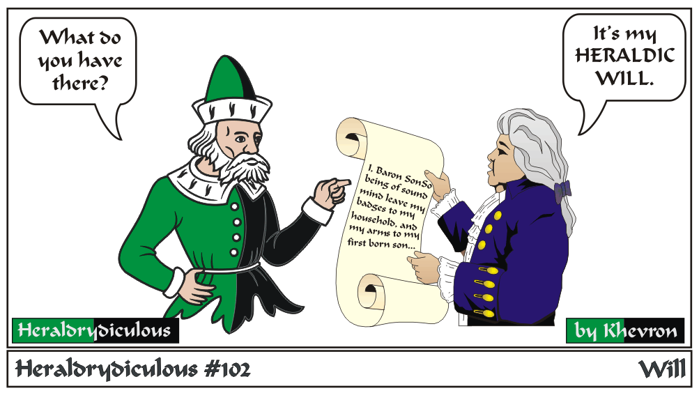

A Heraldic Will doesn't generally pass arms to a successor, though this can be done, but releases arms or a badge upon the death of the owner.
This would free up the 'heraldic space'. This isn't so someone else can necessarily register someone elses arms after they pass, but to
allow similar arms pass that may not, decades down the road, if the Will doesn't exist.
The Will is on the SCA Heraldry Page in the Administrative Handbook Administrative Handbook: Appendix D
(Form Letters), and can be sent in with the registration paperwork or at any later time.
e-mail: 
Back to Khevron's Heraldry Page